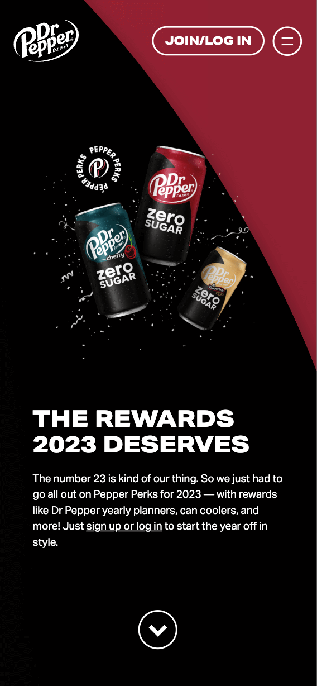
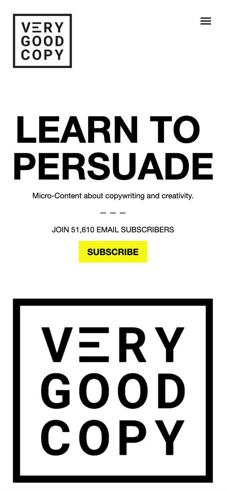

Fitt's Law
Fitts’ law states that the amount of time required for a person to move a pointer (e.g., mouse cursor) to a target area is a function of the distance to the target divided by the size of the target. Thus, the longer the distance and the smaller the target’s size, the longer it takes.
Dr. Pepper.com WebsiteContrast
The design principle contrast refers to the use of visually different elements. In addition to capturing attention, contrast can guide the viewer’s eye to a focal point, highlight important information and add variety, or even drama, to a design. Paired with other principles like proximity, it can really drive a design’s message home.
VeryGoodCopy.comAlignment
In literal terms, alignment means the arrangement of various items in relation to the various borders or edges of the allowable area. Alignment in graphics design definition isn't much different from this. It literally means the lining of graphics and text in relation to the various edges of the design canvas.
Alignment is often overlooked because its application is based on subtlety, but its importance cannot go unnoticed when not applied properly. It is probably the equivalent of furnishing surfaces and apply paint in artisan work.